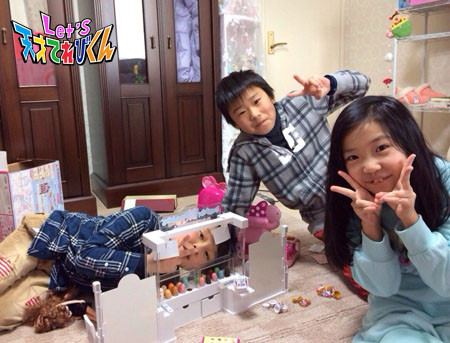

<<2014年12月 | トップページ | 2015年2月>>
2015年1月
これってキセキ！？［桐畑カレン］
こんにちは。
おやつをちょっとひかえるという今年の目標がすでに守れていない…カレンです(*^^*)
私は、いとこの家族とおでかけや旅行をよくします。
いつもと違う場所に行くのって、ワクワクして楽しいですよね(*^^*)
おでかけする前に天気予報をチェックして、
雨マークが出ていると、ちょっとガッカリしたりしませんか(;o;)？
でも、私の場合はあまり心配しなくてもいいんです(^O^)
なぜかというと、いとこ家族がとっても 「 晴れ家族 」 なんです(*^^*)
行くとちゅうで雨がザーザーふっていても、
いとこ家族が旅行先に着くと、ピタリと雨がやむのです。
かなりの確率で、雨がやむのです。
だから、傘いらず！
「 これってキセキ！？」 なのかな(*^^*)
投稿者:桐畑カレン | 投稿時間:18時45分 | カテゴリ：てれび戦士 | 固定リンク
これってキセキ！？［林武尊］
こんにちは！林武尊です！
この前、緋梨ちゃんと竜心と一緒にNHKのスタジオパークに行きました。
そこで、アフレコやニュースの体験コーナーに挑戦しました。
緋梨ちゃんがメインキャスター、竜心がお天気キャスター、ぼくはリポーターをやりました。
本物のニュースに出ているみたいで、
みんなで盛り上がってすごく楽しかったでーす(^O^)／
みんなもスタジオパークに遊びに来たら、ぜひぜひ挑戦してみてくださいね。
では、本題に入ります。
ぼくが 「 これってキセキ！？」 って思うこと。
それは、今までやってきたことが、今につながっているということです。
なぜなら、この何億人もいる人の中で日本に生まれて、
今自分のまわりにいる友達は、ほんのわずかです。
でもぼくが別の時代や、ほかの国に生まれていたら、みんなに会えていなかったし、
それまでに違うことをしていたら、まったく別の人生になっていたかもしれない。
そう考えたら、今の友達に出会えたことって、
キセキだなーと思います☆*:.。.o(≧▽≦)o .。.:*☆
よく考えて行動しないと、もしかしたら悪い人にも出会うかもしれません。
だから何かをするときは、
よく考えて人生をいい方向に向けて行動したいと思います！
Let's！L(^O^)
投稿者:林武尊 | 投稿時間:18時54分 | カテゴリ：てれび戦士 | 固定リンク
これってキセキ！？［飯島緋梨］
こんにちは。
飯島緋梨です。
冬休みがあっという間に終わって、
3学期が始まりました。
学校では、なわとびを頑張って練習しています！
学校には、人気のなわとび台があります^_^
その上では、なぜか二重跳びが簡単にできるのに
地面で二重跳びをするのはむずかしいです...
なので、今年はがんばって
二重跳びが10回できるようになりたいです*\(^o^)/*
さて、今回のお題は
【 これってキセキ！？】
緋梨の 【 これってキセキ ！？】 って思うことは、
小さなことから大きなことまで！
例えば…
バスに乗るときに
間に合わな～いと思って走ったら、
ちょうどバス停につくときにバスが来たとか！
くじ付きのお菓子を買ったら、2回連続で当たったりとか！
とにかく、嬉しいキセキが毎日いっぱいです。
でもでも、1番のキセキはやっぱり、
Let's 天才てれびくんの人たちと出会えたこと！
みんなといると、いつも楽しくて元気になれる。
みんなも嬉しいキセキをあつめてね(^o^)
投稿者:飯島緋梨 | 投稿時間:18時45分 | カテゴリ：てれび戦士 | 固定リンク
2015年・私の目標［辻村晃佑］
ついに新しい年が来ましたね。
なんだか2014年は、あっという間に終わってしまいました。
2015年は学年が変わって2年生になるので、どんな年になるのか楽しみです。
話はずれますが、
このあいだ映画を観に行きまして、その映画で泣いてしまいました(´；ω；｀)
映画で泣くのって、ほんと久しぶりで約3年ぐらい映画で泣いていませんでした。
どうでもいい記録が更新＼(^o^)／
さて、本題です。
今年の目標は、これです！
やっぱり、いろいろな料理を作れたほうが楽しいと思うんですよ。
なので、今年の目標は 「 いろいろな料理を作る 」 です。
まずは、ケーキを作ってみたいです。
もしかしたら、2015年でなんでも作れるようになったりして(*´ω｀*)
あと、ひそかに漢検を受けてみようかな～～と思っています。
僕にとって2015年は、挑戦の年にしたいです！
みなさんの2015年の目標は、何ですか？
投稿者:辻村晃佑 | 投稿時間:18時45分 | カテゴリ：てれび戦士 | 固定リンク
2015年・私の目標［原田明莉］
☆Hello☆
だぁ原田です！
冬休みってやっぱ最高ですね！！！
年末は、大阪から遊びにきた友達と
学校でいつも仲良くしてくれる友達2人の4人でスケートへ行ってきました！
みんなでこけたり。
おにごっこしたり。
こけないで3周できるか挑戦して、それを明莉が解説したり。
いい思い出になって楽しかったです！
めっちゃ楽しかったです！！！
あとあと、年明けには
親族で新年会しました！
ボーリングしたり。
ビンゴ大会したり。
カラオケしたり。
ビンゴ大会では、こんな景品があたりましたよ！
ブルーライトカットメガネ！！！
欲しかったので嬉しかったです（≧∇≦）
さてさて、
今回のお題は…
『 2015年・私の目標 』 です！
私の今年の目標は、
小学生しかでれないハイレベルな空手の全国大会 「 全少 」 に
チャレンジしてみたいとおもいます！
練習も今まで以上にちゃんとしなきゃ！
あ、あとあと、
教えるのが上手な先輩になりたいです(;^_^A
がんばります！
それとそれと、ちょっと女の子らしくなってもいいかも？(｡-_-｡) 笑
まぁま、何はともあれ2015年も楽しく過ごしましょう！！
それが1番大切！！
そして、今年も応援よろしくお願いします！！
★Let's go happily this year too★（今年も楽しく行きましょう）
投稿者:原田明莉 | 投稿時間:18時45分 | カテゴリ：てれび戦士 | 固定リンク
2015年・私の目標［齋藤茉日］
こんにちは( ´ ▽ ` )ﾉ
茉日です(o^^o)
今回のブログのテーマは、
【 2015年 ・ 私の目標 】 です^ ^
そうですね…
【 目標 】 を聞かれると迷ってしまいますが…
『 ギターを上達させる！！！ 』
ということが、
私の今年の目標ですね！！
今年になってからギターに目覚めて、少しずつ練習をしています。
今年やり始めたばかりだから、まだまだうまくは弾けないけど、
「 うまくなったかな？ 」
と考えながらギターを弾くと、
なんだかうまくなった気がして、嬉しくなります（笑）
↑自己満足^^;

今は音が響かないようにエレキギターで練習をしていますが、
上達したらクラシックギターを買ってもらいたいです！！！
そのために、お母さんに
「 これなら、買ってあげよう！ 」
と思わせなくてはいけないので、コツコツ頑張ります！
いろんな曲が弾けるようになるといいな！^ ^

それでは、今年もみなさんにとって、より良い年になりますように^ ^
今年もよろしくお願いします(o^^o)
投稿者:齋藤茉日 | 投稿時間:18時45分 | カテゴリ：てれび戦士 | 固定リンク
2015年・私の目標［桐畑カレン］
こんにちは。カレンです(*^^*)
今年もよろしくお願いします(*^^*)
☆★2015年 ・ 私の目標★☆
【 その1 】 身長をのばしたい！
身長をのばして、教室の後ろの席に座ってみたいです。
後ろの席…あこがれです。
だから苦手な牛乳を給食以外でも、がんばって飲むと約束します。
【 その2 】 おやつをちょっとひかえる(T-T)
この前、座ってテレビを見ていた私の後ろすがたを見たお父さんに、
「 お豆ちゃんじゃなくて、かがみもちみたいになってきたね 」
と言われました。
か、かがみもち(゜o゜)
おもちは、大好きなんです。
幼稚園のときのおもちつき大会で、たくさん食べた子ナンバー1になったくらい大好きです。
でも、かがみもちになった自分を想像したら笑えました。（かがみもちさん、ごめんね）
だから、ほんのちょっとだけ、2015年はおやつをひかえようと思います。
次は、とても大きな目標！！
【 その3 】 いつか屋久島に行って、屋久杉に会いたい！
私には、行くと必ずピトッとする、とても大きな木があります。
年に2～3回しか会えないけど、私にとっては特別な木です。
理由は、ないしょです>^_^<
その木とは比べられないけど、ずっと前から気になっている木が屋久杉です。
どうしてかというと、テレビで見た屋久島がとっても神秘的だったから。
屋久島にある大きな杉は、7000年くらい前から生きているそうです。
7000年も生きてきたって、どんな感じ？
会ってピトッとしてみたいな。
だけど、簡単には行けない場所にあるらしいです。
山歩きをしたこともない私には、大変なこと(>_<)！！
だから、そのために！まずは、体力をつける！！
今は、なんちゃって腹筋7回くらいしかできないから、
本当の腹筋ができるようになるとか、小さなことから始めたいです。
そして、くじけない・負けない・強い気持ちを持てる人になっていきたいです。
難しいことだと思うけど、少しでもそうなれるようになれたらなと思います！
みなさんは、どんな目標をたてましたか？？
目標を達成できたら、とてもうれしいと思います(*^^*)
みなさんにとって、幸せいっぱいな1年になりますように＼(^o^)／
投稿者:桐畑カレン | 投稿時間:18時54分 | カテゴリ：てれび戦士 | 固定リンク
2015年・私の目標［小澤竜心］
こんにちは！竜心です。
2015年＼(^o^)／今年もよろしくお願いいたします。
お正月、ぼくは秋田のおじいちゃん・おばあちゃんに会いに行きました。
去年は、おじいちゃんに大きい 【 かまくら 】 を作ってもらいました。
だから今年は、ぼく1人でかまくら作りに挑戦するのが目標でした。
ジャジャーン！
これが、ぼくが作ったかまくらです。
小さい…(￣▽￣;)
でも1人でがんばって、目標達成しました！
ほかにもソリ遊びや雪合戦をして、とっても楽しかったです♪
それでは、『 2015年 ・ ぼくの目標 』 を聞いてください。
今年は、たくさん動いて 【 体作り 】 をします！
☆殺陣（たて）やアクション☆
→立ち回りやアクロバットにチャレンジして、自分の体を使っていろいろやりたいです。
☆ダンス☆
→新しい振付を素早く覚えて、むずかしいステップやターンをマスターします。
長座体前屈と前後開脚がかたいので、もっとやわらかくなりたいです。
☆少林寺拳法☆
→東京都大会の親子演武で優勝！
全国大会に出場したいです。
この目標を達成するために…、
☆早寝早起き☆
朝早く起きて自主トレをして、夜早く寝て体力作りをします。
☆日記をつける☆
ぼくの思ったことや、稽古で注意されたことを書いて、
その日1日の反省をして、また明日がんばります。
今年も一生懸命、がんばるぞーo(*⌒O⌒)ｂ
投稿者:小澤竜心 | 投稿時間:18時45分 | カテゴリ：てれび戦士 | 固定リンク
2015年・私の目標［林武尊］
みなさん、こんにちは！
林 武尊です。
今年もよろしくお願いします！
今年のお正月もおばあちゃんの田舎に行きました。
毎年、必ず近所の2つの神社に初もうでに行きます。
今年はたくさん雪が降って、寒かったー！
鳥居にもつららが！
2つめの神社は、奥の院までお参りに行きます。
今年もたくさん楽しいことがありますように！
みんなが幸せに暮らせますように！
とお願いしてきました（≧∇≦）
今回のお題 【 2015年・私の目標 】
今年は、2つ目標があります。
1つめは、けん玉の技で灯台と宇宙遊泳ができるようになること。
がんばって練習しているので、絶対にできるようになると思います(￣^￣)ゞ
2つめは…
お母さんに言われる前に、宿題をきっちり終わらせること。
今までなかなかできなかったけど、6年生になるので、今年はがんばります(｀_´)ゞ
みなさんの今年の目標は、何ですか？
投稿者:林武尊 | 投稿時間:18時45分 | カテゴリ：てれび戦士 | 固定リンク
2015年・私の目標［杉本瑛］
みなさん！こんにちは！
年末は、お餅つき～（≧∇≦）
お正月は、いとこと遊びましたよ☆

てんやわんやでございます（笑）
さて、今回のお題は！
「2015年・私の目標」でございます！
それは、何か1つ得意料理を身につけることです！
ふだん私は、お鍋に入れるつくねさんとか唐揚げの下ごしらえをしています。
手にニンニクとショウガの匂いがつくぐらい揉み込むようにしています。
これからもっと修行して、
何か1つの料理を最初から最後まで作れるようになりたいです（≧∇≦）
今年も頑張りますので、どうかこれからも応援よろしくお願いいたします。
投稿者:杉本瑛 | 投稿時間:18時45分 | カテゴリ：てれび戦士 | 固定リンク
2015年・私の目標［瀧澤翼］
瀧澤翼です！
お正月に初めて餃子作りにチャレンジしました！
おばあちゃんみたいに、じょうずに作れなかったけど、
親戚のみんなで食べた餃子はおいしかった～！(^o^)

さて 【 2015年 ・ 僕の目標 】 ですが、
2014年以上にテレビや舞台などで活躍できるように頑張りたいです。
そのためには、ダンスや演技・歌のレッスンなどを頑張って、
もっと自分磨きをしていこうと思います。
そんな願いを込めて、成田山へ初詣に行ってきました！！
人がいっぱいで押し潰されちゃいました(笑)
今年もみんなで、いい年にしましょうね～＼(^_^)／
本年も宜しくお願いします！！
Let's！！
投稿者:瀧澤翼 | 投稿時間:18時45分 | カテゴリ：てれび戦士 | 固定リンク
2015年・私の目標［小西憧弥］
2015年になりました！
あけまして おめでとうございます（≧∇≦）
2014年は、てれび戦士になれて、とてもうれしかったです。
あっという間の1年だったけど、今年はどんな1年になるのかなぁ。
楽しい1年になるといいな…(^_^)
お正月は、奈良のおじいちゃん・おばあちゃんの家に行ってきました！
お年玉もらったー(^_^)v やったー！
今回のお題は、『 2015年 ・ 私の目標 』 です。
【 1つ目 】 アマチュア無線の免許をとる！
【 2つ目 】 2014年はあまり魚を釣ることができなかったから、2015年はいっぱい魚を釣る！
【 3つ目 】 身長140cmになる！
【 4つ目 】 1人で寝れるようになる！
【 5つ目 】 スケボーをもっとうまく乗れるようになる！
いくつ達成できるかな。
頑張ります(^_^)v
投稿者:小西憧弥 | 投稿時間:18時54分 | カテゴリ：てれび戦士 | 固定リンク
2015年・私の目標［飯島緋梨］
あけまして おめでとうございます。
今年もよろしくお願いします。
てれび戦士になった2014年は、
今まで体験したことがない
いろいろなことがおきて、
1年間がすごく早くて、あっという間でした！
今年もみんな、笑顔で楽しく頑張ろう^_^
みなさんは、大みそかに何をしてましたか？
私は、親戚の人のお家で紅白歌合戦を見ながら年越しをしました。
みんなでごちそうを食べたり、
一緒にゲームをしたり、
お年玉をもらったり、
とっても楽しかった^_^
ところで、みなさんは
『 2015年の目標 』 は、ありますか？
私の今年の目標はふたつ。
ものまねのレパートリーを増やしたい！
そして、みんなを笑わせたい^_^
もう1つは、苦手なピーマンを残さないこと。
みんなも苦手な食べ物あるかな？
あかりは、ピーマンがとっても苦手(>_<)
にがい感じが苦手です。
でもピーマンを食べれるようになって、
なんでも食べられるようにしたいな^_^
投稿者:飯島緋梨 | 投稿時間:18時45分 | カテゴリ：てれび戦士 | 固定リンク
2015年・私の目標［笹原尚季］
あけまして おメェ～でとうございます
今年もよろしくお願いします♪
（↑ この中に羊が1匹います。見つけてみてください～(^^) ）
さて、今回のお題は 【 2015年 ・ 私の目標 】
僕は、挑戦したいことがたくさんあります。
その中から、3つ選びました！
1つ目★辛いことも悲しいことも乗り越えることです。
北海道のるるを仲間にするときに、泣いてしまったからメンタルをきたえたいです！
2つ目★そろばんの暗算の段を上げることです。
今は3段なので、6段に挑戦したいです(^.^)
3つ目★学校での新しいことを頑張ることです。
5年生から始まる運動会の組体操や、委員会活動などを頑張りたいです。
あとは当然！
みんなで力を合わせて異次元獣を倒すことと、
茶の間戦士のみなさんに元気を届けられるてれび戦士になりたいでーす♪♪
☆*:.｡. o(≧▽≦)o .｡.:*☆
投稿者:笹原尚季 | 投稿時間:18時45分 | カテゴリ：てれび戦士 | 固定リンク
2015年・私の目標［赤崎月香］
あけまして
おめでとうございます ヽ(^▽^@)ノ
赤崎月香です。
☆。・:*:・°★,。・:*:・°☆
新年は、家族にお茶をたてるのが
私の仕事です♪
お茶碗に対して、お茶の量が多すぎました・・・
でも、おいしくできました～(*^◇^)_旦~~
写真で私が持っているお茶碗は、
上野焼（あがのやき）です。
お誕生日にいただきました。
とてもキレイなお茶碗です。
となりのは、萩焼ですよー♪(*^^*)
みなさんは、茶香炉って知っていますか？
右上の写真が茶香炉です。
お茶の香りが、ふわ～～～～～っと香ります。
リラックス効果と消臭効果があるんだよ！！
いやされる～～～(￣▽￣)。ｏ０○
☆。・:*:・°★,。・:*:・°☆
『 2015年 ・ 私の目標 』
じゃじゃじゃじゃんっ！！！！！
と、その前に・・・
去年もいろいろありました・・・o(´^｀)o
大きな竹ちくわを作ったり、
ワクワクさんを助けに行ったり、
オオサンショウウオのサンちゃんを探したり、
荒波の中、深海魚釣りをしたり、
肝試しで大泣きしたり、
擬人化コスプレで飛行機になったり、
わさび・・・ 氷・・・ などなど・・・
みんなと一緒に異次元獣と戦ったり！！！
いろいろなことに挑戦させてもらいました♪
振り返ってみると、
2014年は、とても短くて充実した
楽しい！楽しい！1年でした！v(=∩_∩=)
みんなみんな ありがとう
よしっ！！！今年の目標！！！
『 悔いのない1年にする 』
ザックリし過ぎですか？Σ(;￣□￣Ａ
では、もうひとつ
『 チャレンジする 』
手を抜かず、
私の持っている全てを出し切りたい。
去年も全力で取り組んできましたが、
それは、100%
今年は、120%で挑みます！！！ヽ(*｀□´*)/
「 やりたくないなぁ 」 「 どうせできないから 」 と、
弱音を言う前にチャレンジします！！！
嫌なことでも、
やってみると結構楽しかったりするし♪
逃げたら損してる感じじゃないですか？
☆。・:*:・°★,。・:*:・°☆

今年もよろしくお願いします
いいことが
いっぱいありますように♪八(^□^*)
またね～ヾ(*'-'*)
投稿者:赤崎月香 | 投稿時間:18時45分 | カテゴリ：てれび戦士 | 固定リンク
不思議だなと思うこと［齋藤茉日］
こんにちはー
茉日です(o^^o)
最近は中学校生活にも慣れきて、毎日が楽しい( ´ ▽ ` )ﾉ
毎日毎日、爆笑してます（≧∇≦）！
そんな私が今、『 不思議だなと思うこと 』 は？
【 目の錯覚 】 です！！(･_･;？
結構前に、お父さんとトリックアートが体験できるところに遊びに行きました(o^^o)
そのときに 「ただの絵なのに、立体で見えるなんて…不思議！」 と思いました！
本当にとっても不思議なんです！
そのとき、写真を撮りました( ´ ▽ ` )ﾉ

どうですか？
不思議ですよね！
そして、昔の私の写真を見たら、すっごく幼かったヽ(；▽；)ノ
このトリックアートの写真の私、幼くないですか？
人間が成長して、少しずつ顔がかわっていくことも不思議だなーと思いました（≧∇≦）
それじゃあ、今回はこのへんで！
今の写真で締めたいと思います( ´ ▽ ` )ﾉ
投稿者:齋藤茉日 | 投稿時間:18時45分 | カテゴリ：てれび戦士 | 固定リンク
不思議だなと思うこと［辻村晃佑］
どうも辻村晃佑です。
さて、今回のお題 『 不思議だなと思うこと 』 は、
置いたはずのものの場所を忘れたり、話そうとしたことを忘れたり、
急に 「 パッ！」 て忘れちゃうことです。
この前も友達に言おうとしたことを忘れちゃって、
そういうときって、なにかモヤモヤした気持ちになっちゃうんですよ。
で、家に帰ったら思い出す…
もうすごい不思議です・゜・(ノД`)・゜・
みなさんも、こんなことはありませんか？
投稿者:辻村晃佑 | 投稿時間:18時54分 | カテゴリ：てれび戦士 | 固定リンク
不思議だなと思うこと［杉本瑛］
杉本瑛です。
この間の撮影の帰り、飯島緋梨ちゃんとお買い物をしました！
お揃いのネックレスとブレスレットを買うときに、
店員さんに「 姉妹なのかな？」 と言われました。
ひとりっ子のなので、お姉さんができたみたいで嬉しかったです！
今回のお題は・・・ 『 不思議だなと思うこと 』 です！パチパチ（笑）
私が不思議だなと思うことは、
日本の小学生は重いランドセルを背負わないといけないことです！
教科書とかがおもーいのに、ランドセルも重いから
背負っていると肩がこるので、もっと軽いものがいいです。
例えば…
インターナショナルスクールに通う友達のアシュリーちゃんは、
リュックサックを使っています。
中国の場合は、もっと軽くて旅行に行く人かのようにキャリーバッグをひいています！
でもランドセルは、ひいおばあちゃんからの入学祝いだから、大事に使ってるよ☆
投稿者:杉本瑛 | 投稿時間:18時45分 | カテゴリ：てれび戦士 | 固定リンク
不思議だなと思うこと［小西憧弥］
こんにちは(^-^)/ 憧弥の順番です。
冬休み前、学校ではインフルエンザが流行っていて、欠席する人でいっぱいでした！
朝、お母さんにマスクを渡されるけど、鼻がかゆくなるからはずして、
そのまま家に帰るから怒られます(>_<)
だって、カッパみたいだし…(-_-)
でも手洗いとうがいは、ちゃんとがんばってます！
今回のお題は、 『不思議だなと思うこと 』 です。
少し前から、どうやって見つけたんだろうって思ってることがあります。
それは、人類で1番最初に火を使った人は、
火のつけ方をどうやって発見したんだろうってことです。
最初は、たぶん乾いた木に雷が落ちて、火がついたのを見たんだと思うけど、
その火を使うために自分で火を起こそうと、一生けん命考えまくったんだろうなー。
キャンプに行って、火起こしにチャレンジしても1回もついたことがないのに。
昔は、ライターもマッチもないのに、
どうやって火を起こしたのかと不思議に思います。
昔の人に会ったら、ぜひコツを教えてもらいたいです！
投稿者:小西憧弥 | 投稿時間:18時45分 | カテゴリ：てれび戦士 | 固定リンク
不思議だなと思うこと［原田明莉］
★新年あけましておめでとうございます★
だーーー原田です！
いやー、さぶい さぶい 寒すぎる…(>_<)
ニット帽、私のニット帽ーーー！
いろんなお店をまわって、
かわいいニット帽をいっぱい買ってきたんです！
5つぐらいあるんですよ(o^^o)
ニット帽をあわせたファッションで
あかりのファッションセンスもよくなってきた…かな？笑
さてさて、本題に入りたいと思います！
今回のお題は、
★不思議だなと思うこと★
私が不思議だなーと思うことは…
☆なんで、こんなにてれび戦士たちと仲良くなれたの？☆
ということです！
喋ったことも会ったことすらない子たちなのに、
いつの間にか、
すーーーーーーーーーんごい
仲良くなってるのは、なんで？
って思うんです！
しかも、
「 だーはらーーー 」
「 だーはらちゃーーーん 」
と呼ばれてるけど、いつ付けてもらったあだ名なのかも覚えてないです。笑
きっと、みんなで話しているうちに
「それ、わかる？」
「確かにねー」
「やっぱりーーー？」
なんて、会話があって仲良くなったんだろーなー(^^)
どうやって仲良くなっていったのか、
しかも、それを覚えてないのも不思議です！！
てれび戦士のみんな、これからもよろしくね！
茶の間戦士のみんなも、これからもよろしくね！！(o^^o)
★ Let's make friends ★（友達になりましょう）
投稿者:原田明莉 | 投稿時間:18時45分 | カテゴリ：てれび戦士 | 固定リンク
ページの一番上へ▲